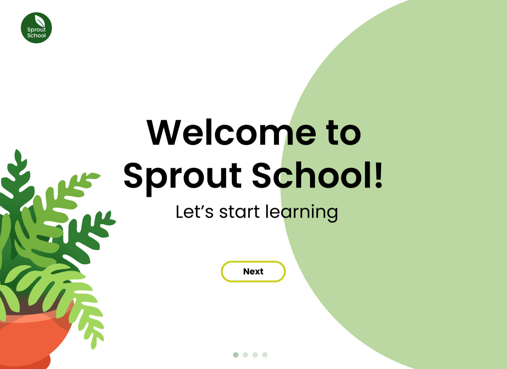

This project was created through SI 482 (an interaction design course), in which student's have a semester to identify a problem and then create a product which would solve it. I was put on a team with three other students at the beginning of the semester to complete the project with.
It took nearly a month and a dozen interviews for our team to identify a problem to design for. Our team ended up on the problem of education. Specifically, we found through our interviews that COVID-19 exposed many requirements that the current virtual learning environment failed to fill for young students. It was evident through our research that more effective, engaging, and motivating learning tools for young students are needed in both virtual and in-person learning environments.
From this need, we created Sprout School: a gamified education application which can be integrated into most school systems. At the end of the semester, it won best in class - beating out over 20 other product designs.
Initial onboarding screen
We began our design process by brainstorming several product ideas. Sprout School looked very different from what it is today; originally, we planned to compete with larger digital learning platforms like Google Classroom, Canvas, and Blackboard. However, the concept and design was altered after performing a competitive analysis, as we realized we were falling prey to scope creep. Another problem with our original concept was deeper than our scoping issues: we simply were not sure what problem we were trying to solve. The initial idea of improving upon current learning software like Google Classroom was far too ambitious and truthfully was not solving any real problem.
We conducted twelve user interviews to include our target market in the design process (which included parents, teachers, and elementary students) to better understand their perspective. From the research, we identified that students felt disconnected, loved gamified learning experiences, and wanted easy access to teacher help in a remote setting. With this in mind, we crafted a new problem statement and created personas and user scenarios which helped us solidify who we are designing for and how our concept would help them. The result was a complete shift in mindset: instead of replacing current learning software, we would design something which complemented it.
With our user interviews completed, we created personas which synthesized the key findings:
From our key findings, we established goals (which we called our five pillars) to guide our design process:
Our problems was rooted deep into the social aspect of the classroom. How do we encourage social interaction, encouragement, motivation and accountability? How can we build a community that may be hundreds of miles apart? How can this product be sustainable after the COVID pandemic? We narrowed our solution down to two products: a class garden which would collectively track each students growth in a communal setting, or a homework assistance app.
The homework assistance app storyboard
The class garden app storyboard
After much deliberation, we chose the "class garden" concept. Each student has a plant avatar that grows whenever they complete homework, and their plant is part of the larger class garden. The more the garden grows, the points the entire class receives. This concept would provide students with a visual representation of their growth; gamifying their educational experience and providing a communal project (the class garden) that each student strives to improve.